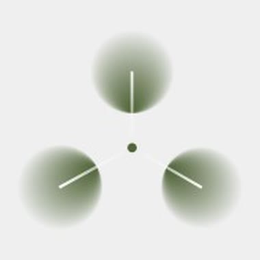

Nando MetzgerGenerative 3D/4D vision researcher and technical builder. I build generative models for 3D and 4D scene reconstruction, and the systems that make them run. At Athlence Sports I work on multi-view 4D reconstruction and generative novel view synthesis. BackgroundMy Ph.D. was at ETH Zurich, in the Photogrammetry and Remote Sensing Lab, supervised by Prof. Konrad Schindler and Prof. Devis Tuia. I also collaborated with the International Committee of the Red Cross (ICRC) on humanitarian applications of remote sensing, such as population mapping and rapid building-damage assessment for disaster response. I obtained my bachelor's and master's degrees in Geomatics Engineering from ETH Zurich, specializing in deep learning and computer vision. I organize the ZurichAI meetups (ZurichCV, ZurichNLP, ZurichRobotics), review for CVPR, ICCV, ECCV, NeurIPS, TPAMI and RSE, and am a technical mentor at Hack4Good. Experience / Research / GitHub / LinkedIn / Scholar / Contact |

|
Experience |
| Athlence Sports Founding Technical Hire, Generative 3D/4D VisionMulti-view 4D reconstruction and generative novel view synthesis for dynamic sports scenes, spanning capture, scene representation and rendering. |
since Feb 2026 | |
 |
Imflora Lab CTOGaussian splatting pipelines for VR installations, built with a three-person research and art collective. |
since May 2025 |
 |
Google Student Researcher, 3D computer visionHost: Federico Tombari · Zurich |
2025 · 8 months |
| Meta Research Intern, then Research CollaboratorSeattle & Zurich |
2023–2024 · 9 months | |
| ETH Zurich Ph.D., Photogrammetry & Remote SensingSchindler / Tuia · Zurich |
2021–2026 | |
| Barry Callebaut Machine Learning Engineer, part timeZurich |
2019 · 6 months |
Generative 3D & 4DGenerative models, multi-view geometry and neural rendering. * indicates equal contribution. |

|
Elastic3D: Controllable Stereo Video Conversion with Guided Latent
Decoding
Nando Metzger, Prune Truong, Goutam Bhat, Konrad Schindler, Federico Tombari CVPR, 2026 (Highlight, top 3%) First author: method, implementation, and experiments. project page / arXiv / Matchability metric Elastic3D is a controllable, end-to-end method for monocular-to-stereo video conversion. Based on latent diffusion with a novel guided VAE decoder, it ensures sharp and epipolar-consistent output while allowing intuitive control over the stereo effect at inference time. |

|
Metal-Gauss 🤘: Train 3D Gaussian Splats on a Mac in Minutes
Nando Metzger GitHub Project, 2026 Sole author: Metal kernels, trainer, and benchmark harness. code Native 3D Gaussian Splatting for Apple Silicon, implemented with Metal. A fused forward+backward rasteriser compiled at runtime, so there is no CUDA and no Xcode. Across all eight NeRF-synthetic scenes it reaches 31.9 dB in about 6 minutes, where the strongest competitor needs 28 minutes to reach 29.2. Hover to watch it converge. |

|
🌼Marigold: Affordable Adaptation of Diffusion-Based Image Generators
for Image Analysis
Bingxin Ke*, Kevin Qu*, Tianfu Wang*, Nando Metzger*, Shengyu Huang, Bo Li, Anton Obukhov, Konrad Schindler IEEE Transactions on Pattern Analysis and Machine Intelligence (TPAMI), 2025 Equal contribution: led the high-resolution work. arXiv / code / demo Marigold (TPAMI) generalizes the original CVPR'24 monocular depth estimator into a diffusion-based foundation model for dense prediction, supporting tasks such as depth, surface normals, and intrinsic image decomposition with only a few diffusion steps and efficient fine-tuning. |

|
📟 PaGeR: Unified Panoramic Geometry Estimation via Multi-View
Foundation Models
Vukasin Bozic, Isidora Slavkovic, Dominik Narnhofer, Nando Metzger, Denis Rozumny, Konrad Schindler, Nikolai Kalischek arXiv preprint, 2026 project page / arXiv / code / demo / models PaGeR lifts powerful 3D foundation models built for perspective images into the panorama domain, recovering a full 360° scene from a single panoramic image. Starting from a pretrained 3D-reconstruction transformer and mixing perspective and panoramic images during training, it predicts scale-invariant depth, metric depth, surface normals, and sky masks in a single forward pass, reaching state-of-the-art, zero-shot performance both indoors and outdoors. |
|
|
⇆ Marigold-DC: Zero-Shot Monocular Depth Completion with Guided
Diffusion
Massimiliano Viola, Kevin Qu, Nando Metzger, Bingxin Ke, Alexander Becker, Konrad Schindler Anton Obukhov, ICCV, 2025 Supervised Massimiliano Viola's master's thesis. project page / arXiv / code / demo Marigold-DC is a zero-shot depth completion framework. We repurpose Marigold as an off-the-shelf monocular depth estimator and guide it with sparse depth observations. |

|
🌼Repurposing Diffusion-Based Image Generators for Monocular Depth
Estimation
Bingxin Ke, Anton Obukhov, Shengyu Huang, Nando Metzger, Rodrigo Caye Daudt, Konrad Schindler CVPR, 2024 (Oral, Best Paper Candidate, top 0.17%) (Oral, Best Paper Candidate, top 0.17%) project page / arXiv / code / colab / demo Marigold is an affine-invariant monocular depth estimation method based on Stable Diffusion, leveraging its rich prior knowledge for better generalization and achieving state-of-the-art performance with significant improvements, even with synthetic training data. |


|
BetterDepth: Plug-and-Play Diffusion Refiner for Zero-Shot Monocular
Depth Estimation
Xiang Zhang, Bingxin Ke, Hayko Riemenschneider, Nando Metzger, Anton Obukhov, Markus Gross, Konrad Schindler, Christopher Schroers NeurIPS, 2024 Paper / arXiv / project BetterDepth is a plug-and-play diffusion-based refiner that boosts the performance of any SOTA zero-shot monocular depth estimation method. |

|
🔥Thera: Aliasing-Free Arbitrary-Scale Super-Resolution with Neural
Heat Fields
Alexander Becker, Rodrigo Caye Daudt, Dominik Narnhofer, Torben Peters, Nando Metzger, Jan Dirk Wegner, Konrad Schindler Transactions on Machine Learning Research (TMLR), 2025 project page / arXiv / code We introduce neural heat fields, a neural field formulation that inherently models a physically exact point spread function, enabling analytically correct anti-aliasing at any super-resolution scale without extra computation. Building on this, Thera achieves aliasing-free arbitrary-scale single image super-resolution, substantially outperforming previous methods while remaining parameter-efficient and supported by strong theoretical guarantees. |

|
🦌DADA: Guided Depth Super-Resolution by Deep Anisotropic
Diffusion
Nando Metzger*, Rodrigo Caye Daudt*, Konrad Schindler CVPR, 2023 arXiv / paper / project page / video / poster We propose DADA, a novel approach to depth image super-resolution by combining guided anisotropic diffusion with a deep convolutional network, enhancing both edge detail and contextual reasoning. This method achieves unprecedented results in three benchmarks, especially at larger scales like x32 |

|
ML-Bokeh: Monocular View Synthesis with Cinematic Depth-of-Field
Nando Metzger GitHub Project, 2025 code ML-Bokeh extends the SHARP codebase with physically-based rendering and smart autofocus for cinematic depth-of-field effects. It features synthetic aperture simulation, artifact-free spiral sampling, and an automated autofocus system based on subject detection. |

|
MLFocalLengths: Estimating the Focal Length of a Single Image
Nando Metzger GitHub Project, 2023 code Information about the focal length with which a photo is taken might be obstructed (internet photos) or not available (vintage photos). Inferring the focal length of a photo solely from a monocular view is an ill-posed task that requires knowledge about the scale of objects and their distance to the camera - e.g. scene understanding. I trained a deep learning model to acquire such scene understanding to predict the focal length and open-source the model with this repository. |
Earth observation & humanitarian responseVision applied to satellite and aerial imagery, including work with the ICRC on population mapping and disaster response. |

|
🍿POPCORN: High-resolution Population Maps Derived from Sentinel-1 and
Sentinel-2🛰️
Nando Metzger, Rodrigo Caye Daudt, Devis Tuia Konrad Schindler Remote Sensing of Environment, 2024 project page / code / arXiv / demo / data POPCORN is a lightweight population mapping method using free satellite images and minimal data, surpassing existing accuracy and providing interpretable maps for mapping populations in data-scarce regions. |

|
🟡POMELO: Fine-grained Population Mapping from Coarse Census Counts and
Open Geodata
Nando Metzger, John E Vargas-Muñoz, Rodrigo Caye Daudt, Benjamin Kellenberger, Thao Ton-That Whelan, Muhammad Imran, Ferda Ofli, Konrad Schindler, Devis Tuia Nature - Scientific Reports, 2022 code / video / arXiv / community dataset POMELO is a deep learning model that creates fine-grained population maps using coarse census counts and open geodata, achieving high accuracy in sub-Saharan Africa and effectively estimating population numbers even without any census data. |


|
The Potential of Copernicus Satellites for Disaster Response:
Retrieving Building Damage from Sentinel-1 and Sentinel-2
Olivier Dietrich, Merlin Alfredsson, Emilia Arens, Nando Metzger, Torben Peters, Linus Scheibenreif, Jan Dirk Wegner, Konrad Schindler ISPRS Congress, 2026 paper / DOI / arXiv / code We investigate whether medium-resolution Copernicus Sentinel-1 and Sentinel-2 imagery can support rapid building damage assessment after disasters. We introduce the xBD-S12 dataset and show that, despite 10 m resolution, building damage can be mapped reliably across many events, making Copernicus data a practical complement to limited very-high resolution imagery. |

|
Bourbon 🥃: Distilled Population Maps
Nando Metzger GitHub Project, 2026 code Bourbon is a lightweight, distilled version of the POPCORN model for population estimation from Sentinel-2 satellite imagery only. By "distilling" over several Bag-Of-Popcorns maps into a compact backbone, Bourbon delivers fast, accurate inference suitable for large-scale mapping. We also provide an all-in-one version of the model that fetches imagery and performs inference in one command. |

|
Crop Classification under Varying Cloud Cover with Neural Ordinary
Differential Equations
Nando Metzger*, Mehmet Ozgur Turkoglu*, Stefano D'Aronco, Jan Dirk Wegner, Konrad Schindler, IEEE, TGRS, 2021 paper / DOI / arXiv / code We propose using neural ordinary differential equations (NODEs) combined with RNNs to improve crop classification from irregularly spaced satellite images, showing enhanced accuracy over common methods, especially with few observations, and better early-season forecasting due to the continuous representation of latent dynamics. |


|
Four decades of circumpolar super-resolved satellite land surface
temperature data
Sonia Dupuis, Nando Metzger, Konrad Schindler, Frank Göttsche, Stefan Wunderle arXiv, 2025 arXiv We present a 42-year pan-Arctic land surface temperature dataset, downscaled from AVHRR GAC to 1 km resolution with a deep anisotropic diffusion super-resolution model trained on MODIS LST and guided by high-resolution land cover, elevation, and vegetation height. The resulting twice-daily, 1 km LST record enables improved permafrost and near-surface air temperature modelling, Greenland Ice Sheet surface mass balance assessment, and climate monitoring in the pre-MODIS era. |

|
🏗️ Urban Change Forecasting from Satellite Images
Nando Metzger, Mehmet Ozgur Turkoglu Rodrigo Caye Daudt, Jan Dirk Wegner, Konrad Schindler, PFG, 2023 (Karl Kraus Award, 1st place), (Karl-Kraus Best Paper Award) paper We propose a method for forecasting the emergence and timing of new buildings using a deep neural network with a custom pretraining procedure, validated on the SpaceNet7 dataset. |


|
Automatic Image Compositing and Snow Segmentation for Alpine Snow Cover
Monitoring
Janik Baumer, Nando Metzger, Elisabeth D Hafner, Rodrigo Caye Daudt, Jan Dirk Wegner, Konrad Schindler IEEE Swiss Conference on Data Science (SDS), 2023, paper We automate SLF's ground-based snow cover monitoring pipeline in the Dischma valley by combining deep learning-based fog classification with pixel-wise snow segmentation for ground camera imagery. Our approach removes manual thresholds, generalizes across multiple cameras, and enables more scalable, reliable alpine snow cover mapping to support avalanche research and satellite product validation. |

|
DSM Refinement with Deep Encoder-Decoder Networks
Nando Metzger, Corinne Stucker, Konrad Schindler, arXiv, 2020 paper This work presents a method for automatically refining 3D city models generated from aerial images by using a neural network trained with reference data and a loss function to improve DSMs, effectively preserving geometric structures while removing noise and artifacts. |
News
Earlier news
|
Open mentoringA lot of useful advice in research never gets written down. It travels through networks that not everyone has access to. I keep time aside for short, informal conversations with students and early-career researchers: picking a research direction, moving between industry and academia, or working out a sensible next step. If that would be useful, email me a few lines about your background and what you would like to talk through. |
ContactHappy to talk about generative 3D/4D reconstruction, neural rendering, or building research systems that ship. ***@***.com [reveal] / GitHub / LinkedIn / Google Scholar |
|
Thank you for the template Jon Barron. |